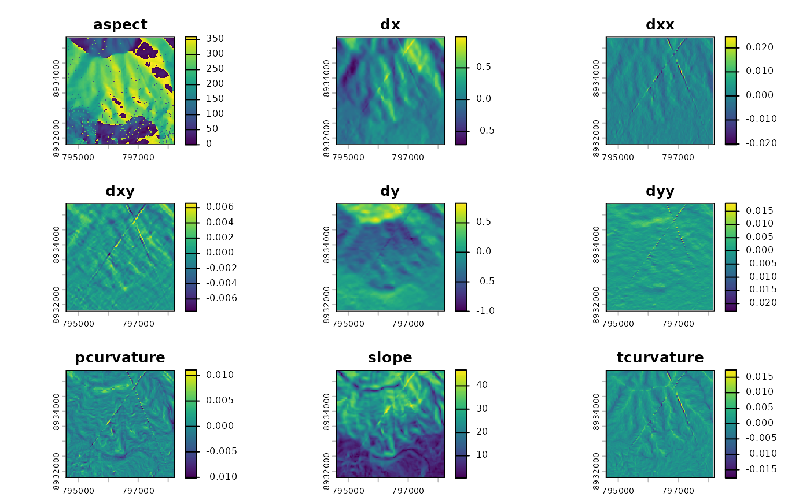

Getting started with qgisprocess
Jannes Muenchow & Floris Vanderhaeghe
Last updated: 2023-05-15
Source:vignettes/qgisprocess.Rmd
qgisprocess.RmdFor a very short introduction to qgisprocess, visit the homepage.
Here you will learn about package configuration, about basic usage illustrated by two examples, and how to pipe results into a next geoprocessing step.
Setting up the system
qgisprocess is basically a wrapper around the
standalone command line tool qgis_process.
Therefore, you need to have installed QGIS on your system as well as
third-party providers such as GRASS and SAGA to access and run all
geoalgorithms provided through qgis_process from within
R.
The package is meant to support current QGIS releases, i.e. both the latest and the long-term release. Although older QGIS releases are not officially supported, qgisprocess might work with QGIS versions >=3.16. Download instructions for all platforms are available at https://download.qgis.org/.
To facilitate using qgisprocess, we have created a docker image that already comes with the needed software packages. You can pull it from Github’s container registry by running:
docker pull ghcr.io/geocompx/docker:qgisFor a more detailed introduction on how to get started with docker, please refer to https://github.com/geocompx/docker.
Package configuration
Since qgisprocess depends on the command line tool
qgis_process, it already tries to detect
qgis_process on your system when it is being loaded, and
complains if it cannot find it.
library("qgisprocess")
#> QGIS version: 3.30.3-'s-Hertogenbosch
#> Having access to 349 algorithms from 4 QGIS processing providers.
#> Run `qgis_configure(use_cached_data = TRUE)` to reload cache and get more details.
#> >>> Run `qgis_enable_plugins()` to enable 3 disabled plugins and access
#> their algorithms: grassprovider, otbprovider,
#> processing_saga_nextgenWhen loading qgisprocess for the first time, it will
cache among others the path to qgis_process, the QGIS
version and the list of known algorithms. When loading
qgisprocess in later R sessions, the cache file is read
instead for speed-up, on condition that it is still valid. Therefore,
usually you don’t have to do any configuration yourself, unless there’s
a message telling you to do so.
If you are interested in the details about this process, e.g. how
qgisprocess detected qgis_process, run
qgis_configure(use_cached_data = TRUE).
qgis_configure(use_cached_data = TRUE)
#> Checking configuration in cache file (~/.cache/R-qgisprocess/cache-0.0.0.9000.rds)
#> Checking cached QGIS version with version reported by 'qgis_process' ...
#> QGIS versions match! (3.30.3-'s-Hertogenbosch)
#> Checking cached QGIS plugins (and state) with those reported by 'qgis_process' ...
#> QGIS plugins match! (1 processing provider plugin(s) enabled)
#>
#> >>> Run `qgis_enable_plugins()` to enable 3 disabled plugins and access
#> their algorithms: grassprovider, otbprovider,
#> processing_saga_nextgen
#>
#> Restoring configuration from '~/.cache/R-qgisprocess/cache-0.0.0.9000.rds'
#> QGIS version: 3.30.3-'s-Hertogenbosch
#> Using 'qgis_process' in the system PATH.
#> >>> If you need another installed QGIS instance, run `qgis_configure()`;
#> see `?qgis_configure` if you need to preset the path of 'qgis_process'.
#> Using JSON for output serialization.
#> Using JSON for input serialization.
#> 1 out of 4 available processing provider plugins are enabled.
#> Having access to 349 algorithms from 4 QGIS processing providers.
#> Use qgis_algorithms(), qgis_providers(), qgis_plugins(), qgis_using_json_output(),
#> qgis_path() and qgis_version() to inspect the cache environment.If needed the cache will be rebuilt automatically upon loading the
package. This is the case when the QGIS version or the location of the
qgis_process command-line utility has changed,
user-settings (e.g. the option qgisprocess.path) have been
altered or a changed state of the processing provider plugins (enabled
vs. disabled) has been detected.
Rebuilding the cache can be triggered manually by running
qgis_configure() (its default is
use_cached_data = FALSE).
To determine the location of qgis_process,
qgis_configure() first checks if the R option
qgisprocess.path or the global environment variable
R_QGISPROCESS_PATH has been set. This already indicates
that you can specify one of these settings in case
qgis_process has not been installed in one of the most
common locations or if there are multiple QGIS versions available. If
this is the case, set
options(qgisprocess.path = '/path/to/qgis_process') or set
the environment variable (e.g. in .Renviron) and run
qgis_configure(). Under Windows make sure to indicate the
path to the qgis_process-qgis.bat file, e.g.,
# specify path to QGIS installation on Windows
options(qgisprocess.path = "C:/Program Files/QGIS 3.28/bin/qgis_process-qgis.bat")
# or use the QGIS nightly version (if installed via OSGeo4W)
# options(qgisprocess.path = "C:/OSGeo4W64/bin/qgis_process-qgis-dev.bat")
qgis_configure() # or use library(qgisprocess) if package was not loaded yetAssuming that package loading or qgis_configure() ran
successfully, we can check which QGIS version our system is running (it
takes this from the cache):
qgis_version()
#> [1] "3.30.3-'s-Hertogenbosch"Next, let’s check which plugins are at our disposal:
qgis_plugins()
#> # A tibble: 4 × 2
#> name enabled
#> <chr> <lgl>
#> 1 grassprovider FALSE
#> 2 otbprovider FALSE
#> 3 processing TRUE
#> 4 processing_saga_nextgen FALSESince we will use GRASS and SAGA later on, let’s enable them (of course, this implies that you have already installed GRASS and SAGA version > 7 on your system):
qgis_enable_plugins(c("grassprovider", "processing_saga_nextgen"))Now, let’s list all available providers including available third-party applications:
qgis_providers()
#> # A tibble: 6 × 3
#> provider provider_title algorithm_count
#> <chr> <chr> <int>
#> 1 gdal GDAL 56
#> 2 grass7 GRASS 304
#> 3 qgis QGIS 50
#> 4 3d QGIS (3D) 1
#> 5 native QGIS (native c++) 242
#> 6 sagang SAGA Next Gen 509This tells us that we can also use the third-party providers GDAL, GRASS and SAGA through the QGIS interface.
Basic usage
First example
To find out about the available (cached) geoalgorithms, run:
algs <- qgis_algorithms()
algs
#> # A tibble: 1,162 × 24
#> provider provider_title algorithm algorithm_id algorithm_title
#> <chr> <chr> <chr> <chr> <chr>
#> 1 3d QGIS (3D) 3d:tessellate tessellate Tessellate
#> 2 gdal GDAL gdal:aspect aspect Aspect
#> 3 gdal GDAL gdal:assignprojection assignproje… Assign project…
#> 4 gdal GDAL gdal:buffervectors buffervecto… Buffer vectors
#> 5 gdal GDAL gdal:buildvirtualraster buildvirtua… Build virtual …
#> 6 gdal GDAL gdal:buildvirtualvector buildvirtua… Build virtual …
#> 7 gdal GDAL gdal:cliprasterbyextent cliprasterb… Clip raster by…
#> 8 gdal GDAL gdal:cliprasterbymaskla… cliprasterb… Clip raster by…
#> 9 gdal GDAL gdal:clipvectorbyextent clipvectorb… Clip vector by…
#> 10 gdal GDAL gdal:clipvectorbypolygon clipvectorb… Clip vector by…
#> # ℹ 1,152 more rows
#> # ℹ 19 more variables: provider_can_be_activated <lgl>,
#> # provider_is_active <lgl>, provider_long_name <chr>, provider_version <chr>,
#> # provider_warning <chr>, can_cancel <lgl>, deprecated <lgl>, group <chr>,
#> # has_known_issues <lgl>, help_url <chr>, requires_matching_crs <lgl>,
#> # short_description <chr>, tags <list>, default_raster_file_extension <chr>,
#> # default_vector_file_extension <chr>, …Since we have also installed GRASS and SAGA, nearly 1000
geoalgorithms are at our disposal. To find out about a specific
geoalgorithm and a description of its arguments, use
qgis_show_help(), e.g.:
qgis_show_help("native:buffer")
## Buffer (native:buffer)
##
## ----------------
## Description
## ----------------
## This algorithm computes a buffer area for all the features in an input layer, using a fixed or dynamic distance.
##
## The segments parameter controls the number of line segments to use to approximate a quarter circle when creating rounded offsets.
##
##...To find out the arguments of a specific geoalgorithm, run:
qgis_get_argument_specs("native:buffer")
#> # A tibble: 8 × 6
#> name description qgis_type default_value available_values acceptable_values
#> <chr> <chr> <chr> <list> <list> <list>
#> 1 INPUT Input layer source <NULL> <NULL> <chr [1]>
#> 2 DISTAN… Distance distance <int [1]> <NULL> <chr [3]>
#> 3 SEGMEN… Segments number <int [1]> <NULL> <chr [3]>
#> 4 END_CA… End cap st… enum <int [1]> <chr [3]> <chr [2]>
#> 5 JOIN_S… Join style enum <int [1]> <chr [3]> <chr [2]>
#> 6 MITER_… Miter limit number <int [1]> <NULL> <chr [3]>
#> 7 DISSOL… Dissolve r… boolean <lgl [1]> <NULL> <chr [4]>
#> 8 OUTPUT Buffered sink <NULL> <NULL> <chr [1]>And finally run it with qgis_run_algorithm():
# if needed, first install spDataLarge:
# remotes::install_github("Nowosad/spDataLarge")
data("random_points", package = "spDataLarge")
result <- qgis_run_algorithm("native:buffer", INPUT = random_points, DISTANCE = 50)
#> Argument `SEGMENTS` is unspecified (using QGIS default value).
#> Using `END_CAP_STYLE = "Round"`
#> Using `JOIN_STYLE = "Round"`
#> Argument `MITER_LIMIT` is unspecified (using QGIS default value).
#> Argument `DISSOLVE` is unspecified (using QGIS default value).
#> Using `OUTPUT = qgis_tmp_vector()`As a convenience to the user, qgis_run_algorithm()
reports all unspecified and automatically chosen arguments. If you want
to have even more information on what is going on in the background, set
.quiet to FALSE. The result
object is of class qgis_result and contains the path to the
output file created by qgis_process (when not explicitly
setting an output filepath, qgisprocess creates it
automatically for you). The output filepath can be extracted with
qgis_extract_output(). qgis_result objects are
of type list which, aside from the geoprocessing result,
also contain debugging information about the used algorithm, input
arguments and messages from the processing step. See
?qgis_result_status for various convenience functions to
extract all of this information easily from qgis_result
objects.
For QGIS 3.24 and later, qgis_run_algorithm() passes the
input arguments to QGIS as a JSON string. The JSON input string is also
included in qgis_result objects. Moreover, the user can
specify input arguments directly as JSON in
qgis_run_algorithm(). That is useful since input parameters
can be copied from the QGIS GUI as JSON. This will be demonstrated in a
separate tutorial.
# inspect the result object
class(result)
#> [1] "qgis_result"
names(result)
#> [1] "OUTPUT" ".algorithm" ".args" ".raw_json_input"
#> [5] ".processx_result"
result # only prints the output element(s)
#> <Result of `qgis_run_algorithm("native:buffer", ...)`>
#> List of 1
#> $ OUTPUT: 'qgis_outputVector' chr "/tmp/Rtmpfncv2X/file31a62fb9156/file31a6eb67212.gpkg"To read in the QGIS output and visualize it, we can run:
library("sf")
library("mapview")
# attach QGIS output
# either do it "manually":
buf <- read_sf(qgis_extract_output(result, "OUTPUT"))
# or use the st_as_sf.qgis_result method:
buf <- sf::st_as_sf(result)
# plot your result
mapview(buf, col.regions = "blue") +
mapview(random_points, col.regions = "red", cex = 3)You can convert each qgis-algorithm into an R function with
qgis_function(). So using our buffer example from above, we
could also run:
# create a function
qgis_buffer <- qgis_function("native:buffer")
# run the function
result <- qgis_buffer(INPUT = random_points, DISTANCE = 50)This is basically what package qgis is doing for each available QGIS function while also providing an R help file for each function. Hence, if you prefer running QGIS with callable R functions, check it out.
Second example
As a second example, let’s have a look at how to do raster processing
running GRASS in the background. To compute various terrain attributes
of a digital elevation model, we can use
grass7:r.slope.aspect.
qgis_get_description() (also included in
qgis_show_help()) gives us the general description of the
algorithm.
qgis_get_description("grass7:r.slope.aspect")
#> grass7:r.slope.aspect
#> "Generates raster layers of slope, aspect, curvatures and partial derivatives from a elevation raster layer."We can find out about the arguments again with the help of
qgis_get_argument_specs().
qgis_get_argument_specs("grass7:r.slope.aspect")
#> # A tibble: 21 × 6
#> name description qgis_type default_value available_values acceptable_values
#> <chr> <chr> <chr> <list> <list> <list>
#> 1 eleva… Elevation raster <NULL> <NULL> <chr [1]>
#> 2 format Format for… enum <int [1]> <chr [2]> <chr [2]>
#> 3 preci… Type of ou… enum <int [1]> <chr [3]> <chr [2]>
#> 4 -a Do not ali… boolean <lgl [1]> <NULL> <chr [4]>
#> 5 -e Compute ou… boolean <lgl [1]> <NULL> <chr [4]>
#> 6 -n Create asp… boolean <lgl [1]> <NULL> <chr [4]>
#> 7 zscale Multiplica… number <dbl [1]> <NULL> <chr [3]>
#> 8 min_s… Minimum sl… number <dbl [1]> <NULL> <chr [3]>
#> 9 slope Slope rasterDe… <NULL> <NULL> <chr [1]>
#> 10 aspect Aspect rasterDe… <NULL> <NULL> <chr [1]>
#> # ℹ 11 more rowsqgis_get_output_specs() shows the different outputs that
will be calculated:
qgis_get_output_specs("grass7:r.slope.aspect")
#> # A tibble: 9 × 3
#> name description qgis_output_type
#> <chr> <chr> <chr>
#> 1 aspect Aspect outputRaster
#> 2 dx First order partial derivative dx (E-W slope) outputRaster
#> 3 dxx Second order partial derivative dxx outputRaster
#> 4 dxy Second order partial derivative dxy outputRaster
#> 5 dy First order partial derivative dy (N-S slope) outputRaster
#> 6 dyy Second order partial derivative dyy outputRaster
#> 7 pcurvature Profile curvature outputRaster
#> 8 slope Slope outputRaster
#> 9 tcurvature Tangential curvature outputRasterNow let us calculate the terrain attributes.
library("terra")
# attach digital elevation model from Mt. Mongón (Peru)
dem <- rast(system.file("raster/dem.tif", package = "spDataLarge"))
# if not already done, enable the grass plugin
# qgis_enable_plugins("grassprovider")
info <- qgis_run_algorithm(alg = "grass7:r.slope.aspect", elevation = dem)Just printing the info object shows which output files
have been made:
info
#> <Result of `qgis_run_algorithm("grass7:r.slope.aspect", ...)`>
#> List of 9
#> $ aspect : 'qgis_outputRaster' chr "/tmp/Rtmpfncv2X/file31a62fb9156/file31a6366f60ea.tif"
#> $ dx : 'qgis_outputRaster' chr "/tmp/Rtmpfncv2X/file31a62fb9156/file31a670bbccc1.tif"
#> $ dxx : 'qgis_outputRaster' chr "/tmp/Rtmpfncv2X/file31a62fb9156/file31a6152c9861.tif"
#> $ dxy : 'qgis_outputRaster' chr "/tmp/Rtmpfncv2X/file31a62fb9156/file31a62ec8f268.tif"
#> $ dy : 'qgis_outputRaster' chr "/tmp/Rtmpfncv2X/file31a62fb9156/file31a64709aed3.tif"
#> $ dyy : 'qgis_outputRaster' chr "/tmp/Rtmpfncv2X/file31a62fb9156/file31a660053db9.tif"
#> $ pcurvature: 'qgis_outputRaster' chr "/tmp/Rtmpfncv2X/file31a62fb9156/file31a62bb1b9d3.tif"
#> $ slope : 'qgis_outputRaster' chr "/tmp/Rtmpfncv2X/file31a62fb9156/file31a6677abbd3.tif"
#> $ tcurvature: 'qgis_outputRaster' chr "/tmp/Rtmpfncv2X/file31a62fb9156/file31a663b5fe88.tif"Combine these output rasters as a multi-layered
SpatRaster object and plot it:
# just keep the names of output rasters
nms <- qgis_get_output_specs("grass7:r.slope.aspect")$name
# read in the output rasters
r <- info[nms] |>
unlist() |>
terra::rast() |>
as.numeric()
names(r) <- nms
# plot the output
plot(r)
An alternative way to combine the rasters is given below.
r <- lapply(info[nms], \(x) as.numeric(qgis_as_terra(x))) |>
rast()Since we have now many terrain attributes at our disposal, let us
take the opportunity to add their values to points laying on top of them
with the help of the SAGA function
sagang:addrastervaluestopoints.
qgis_get_argument_specs("sagang:addrastervaluestopoints")
#> # A tibble: 4 × 6
#> name description qgis_type default_value available_values acceptable_values
#> <chr> <chr> <chr> <list> <list> <list>
#> 1 SHAPES Points source <NULL> <NULL> <chr [1]>
#> 2 GRIDS Grids multilay… <NULL> <NULL> <list [0]>
#> 3 RESULT Result vectorDe… <NULL> <NULL> <chr [1]>
#> 4 RESAMP… Resampling enum <int [1]> <chr [4]> <chr [2]>The GRIDS argument is of type multilayer. To pass
multiple layers to one argument, you can either repeat the corresponding
argument as often as needed …
rp_tp <- qgis_run_algorithm(
"sagang:addrastervaluestopoints",
SHAPES = random_points,
GRIDS = info$aspect[[1]],
GRIDS = info$slope[[1]],
GRIDS = info$tcurvature[[1]],
RESAMPLING = 0)
#> Using `RESULT = qgis_tmp_vector()`… or you can pass to it all needed layers in one list. One could use
the list() command but it is recommendended to use the
qgis_list_input() function which is more robust, and
therefore will also support non-JSON-input configurations (e.g. QGIS
< 3.24).
rp_tp <- qgis_run_algorithm(
"sagang:addrastervaluestopoints",
SHAPES = random_points,
GRIDS = qgis_list_input(info$aspect[[1]], info$slope[[1]], info$tcurvature[[1]]),
RESAMPLING = 0)To verify that it worked, read in the output.
sf::st_as_sf(rp_tp)
#> Simple feature collection with 100 features and 5 fields
#> Geometry type: POINT
#> Dimension: XYZ
#> Bounding box: xmin: 795551.4 ymin: 8932370 xmax: 797242.3 ymax: 8934800
#> z_range: zmin: 0 zmax: 0
#> Projected CRS: WGS 84 / UTM zone 17S
#> # A tibble: 100 × 6
#> id spri file31a6366f60ea file31a6677abbd3 file31a663b5fe88
#> <int> <int> <dbl> <dbl> <dbl>
#> 1 1 4 251. 6.80 0.0000292
#> 2 2 4 79.7 4.60 -0.00206
#> 3 3 3 290. 6.35 -0.00129
#> 4 4 2 88.8 7.74 0.00108
#> 5 5 4 341. 15.0 -0.000439
#> 6 6 5 276. 16.0 -0.0000909
#> 7 7 6 272. 9.09 -0.000245
#> 8 8 2 300. 4.62 -0.000846
#> 9 9 3 68.9 13.3 -0.00115
#> 10 10 3 101. 12.6 0.00151
#> # ℹ 90 more rows
#> # ℹ 1 more variable: geom <POINT [m]>Piping
qgis_process does not lend itself naturally to piping
because its first argument is the name of a geoalgorithm instead of a
data object. qgis_run_algorithm_p() circumvents this by
accepting a .data object as its first argument, and pipes
this data object into the the first argument of a geoalgorithm assuming
that the specified geoalgorithm needs a data input object as its first
argument.
system.file("longlake/longlake_depth.gpkg", package = "qgisprocess") |>
qgis_run_algorithm_p("native:buffer", DISTANCE = 50)
#> Argument `SEGMENTS` is unspecified (using QGIS default value).
#> Using `END_CAP_STYLE = "Round"`
#> Using `JOIN_STYLE = "Round"`
#> Argument `MITER_LIMIT` is unspecified (using QGIS default value).
#> Argument `DISSOLVE` is unspecified (using QGIS default value).
#> Using `OUTPUT = qgis_tmp_vector()`
#> <Result of `qgis_run_algorithm("native:buffer", ...)`>
#> List of 1
#> $ OUTPUT: 'qgis_outputVector' chr "/tmp/Rtmpfncv2X/file31a62fb9156/file31a635e59378.gpkg"If .data is a qgis_result object,
qgis_run_algorithm_p() automatically tries to select an
element named OUTPUT. However, if the output has another
name (e.g., DEM_PREPROC as in the example below) or if
there are multiple output elements to choose from (e.g.,
sagang:sagawetnessindex has four output rasters, check with
qgis_outputs("sagang:sagawetnessindex")), you can specify
the wanted output object via the .select argument. Please
note that we make sure that temporary output raster files, i.e., all
output rasters we do not specifically name ourselves, should use SAGA’s
native raster file format by setting the
qgisprocess.tmp_raster_ext to .sdat. Using the
default raster output format .tif might lead to trouble
depending on the installed versions of third-party packages (GDAL, SAGA,
etc.).
dem <- system.file("raster/dem.tif", package = "spDataLarge")
# in case you need to enable the SAGA next generation algorithms, run the following line:
# qgis_enable_plugins("processing_saga_nextgen")
options(qgisprocess.tmp_raster_ext = ".sdat")
qgis_run_algorithm(algorithm = "sagang:sinkremoval", DEM = dem,
METHOD = 1) |>
qgis_run_algorithm_p("sagang:sagawetnessindex", .select = "DEM_PREPROC")
#> Argument `SINKROUTE` is unspecified (using QGIS default value).
#> Using `DEM_PREPROC = qgis_tmp_raster()`
#> Argument `THRESHOLD` is unspecified (using QGIS default value).
#> Argument `THRSHEIGHT` is unspecified (using QGIS default value).
#> Argument `WEIGHT` is unspecified (using QGIS default value).
#> Using `AREA = qgis_tmp_raster()`
#> Using `SLOPE = qgis_tmp_raster()`
#> Using `AREA_MOD = qgis_tmp_raster()`
#> Using `TWI = qgis_tmp_raster()`
#> Argument `SUCTION` is unspecified (using QGIS default value).
#> Using `AREA_TYPE = "[0] total catchment area"`
#> Using `SLOPE_TYPE = "[0] local slope"`
#> Argument `SLOPE_MIN` is unspecified (using QGIS default value).
#> Argument `SLOPE_OFF` is unspecified (using QGIS default value).
#> Argument `SLOPE_WEIGHT` is unspecified (using QGIS default value).
#> <Result of `qgis_run_algorithm("sagang:sagawetnessindex", ...)`>
#> List of 4
#> $ AREA : 'qgis_outputRaster' chr "/tmp/Rtmpfncv2X/file31a62fb9156/file31a64a9ee9c3.sdat"
#> $ AREA_MOD: 'qgis_outputRaster' chr "/tmp/Rtmpfncv2X/file31a62fb9156/file31a66a1bf1d4.sdat"
#> $ SLOPE : 'qgis_outputRaster' chr "/tmp/Rtmpfncv2X/file31a62fb9156/file31a6684ae1bc.sdat"
#> $ TWI : 'qgis_outputRaster' chr "/tmp/Rtmpfncv2X/file31a62fb9156/file31a6469cf49f.sdat"When piping, qgis_run_algorithm_p() automatically cleans
up after you by deleting intermediate results. This avoids cluttering
your system when running geoalgorithms on large spatial data files. To
turn off this behavior, set .clean to
FALSE.
Of course, you can also pipe to qgis_run_algorithm() by
manually extracting the OUTPUT object and redirecting it to
the appropriate input argument of the next processing step. This avoids
ambiguity and allows for greater flexibility though it might not be as
convenient as qgis_run_algorithm_p(). For example,
intermediate results remain on disk for the duration of your R session,
unless you manually call qgis_clean_result() on a result
object.
result <- qgis_run_algorithm(algorithm = "sagang:sinkremoval", DEM = dem,
METHOD = 1) |>
_$DEM_PREPROC[1] |>
qgis_run_algorithm(algorithm = "sagang:sagawetnessindex",
DEM = _)
#> Argument `SINKROUTE` is unspecified (using QGIS default value).
#> Using `DEM_PREPROC = qgis_tmp_raster()`
#> Argument `THRESHOLD` is unspecified (using QGIS default value).
#> Argument `THRSHEIGHT` is unspecified (using QGIS default value).
#> Argument `WEIGHT` is unspecified (using QGIS default value).
#> Using `AREA = qgis_tmp_raster()`
#> Using `SLOPE = qgis_tmp_raster()`
#> Using `AREA_MOD = qgis_tmp_raster()`
#> Using `TWI = qgis_tmp_raster()`
#> Argument `SUCTION` is unspecified (using QGIS default value).
#> Using `AREA_TYPE = "[0] total catchment area"`
#> Using `SLOPE_TYPE = "[0] local slope"`
#> Argument `SLOPE_MIN` is unspecified (using QGIS default value).
#> Argument `SLOPE_OFF` is unspecified (using QGIS default value).
#> Argument `SLOPE_WEIGHT` is unspecified (using QGIS default value).
# or using an anonymous function
# result <- qgis_run_algorithm(algorithm = "sagang:sinkremoval", DEM = dem,
# METHOD = 1) |>
# (\(x) qgis_run_algorithm(algorithm = "sagang:sagawetnessindex",
# DEM = x$DEM_PREPROC[1])) ()
# set the default output raster format to .tif again
options(qgisprocess.tmp_raster_ext = ".tif")